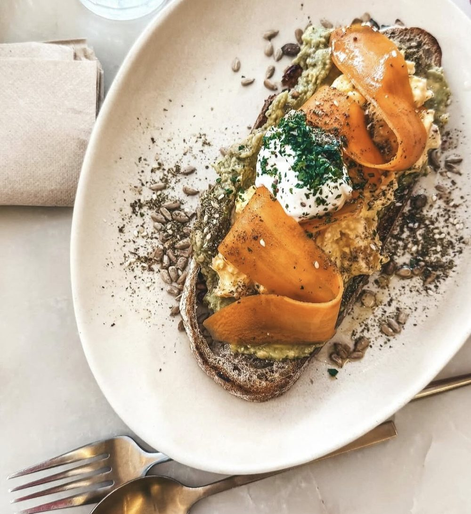
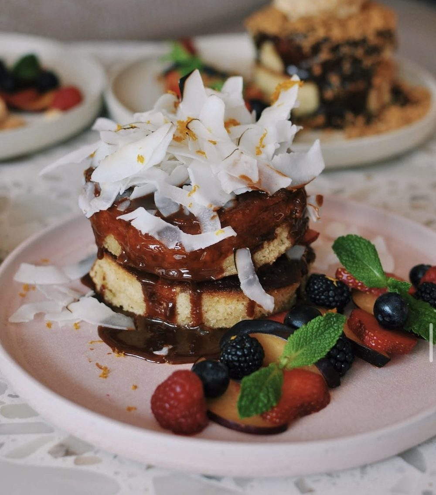
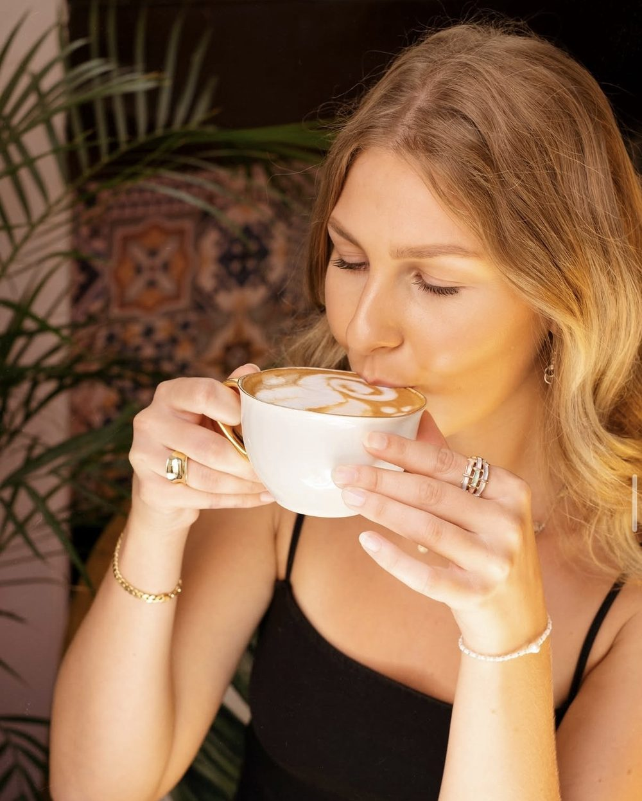

À mesa
O que sai da cozinha
Fotografia real do Augusto — pratos, café e os dias de sol.






Brunch de bairro, feito devagar e servido todos os dias.
Mesas de mármore, chão de azulejo cor-de-rosa e balcões cheios de luz. O Augusto nasceu pequeno de propósito — para que cada brunch seja servido com tempo.
Abrimos em Alfama em 2023 e depressa virámos paragem obrigatória de quem procura café de especialidade e brunch bem feito. Hoje há também a casa de Belém, maior. O pão de banana da casa e a geleia de abóbora caseira ganharam vida própria — e sim, há fila. Vale cada minuto.

Fotografia real do Augusto — pratos, café e os dias de sol.



De Alfama a Belém, todos os dias das 08:30 às 16:30.